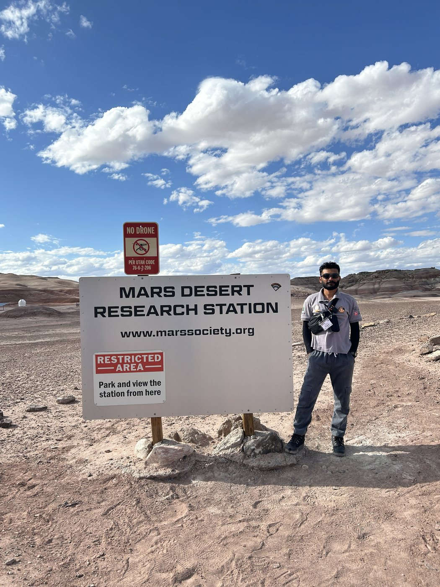
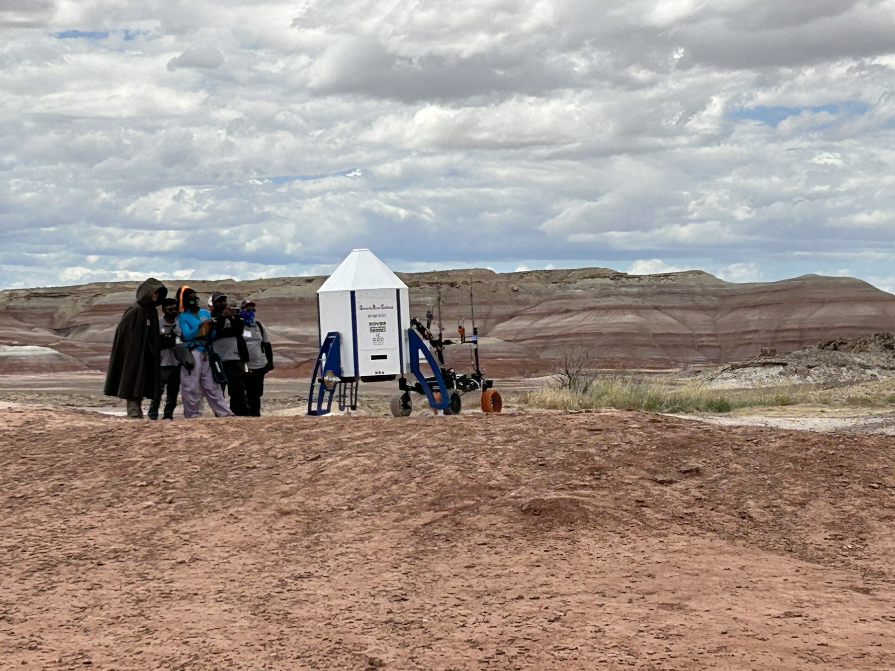
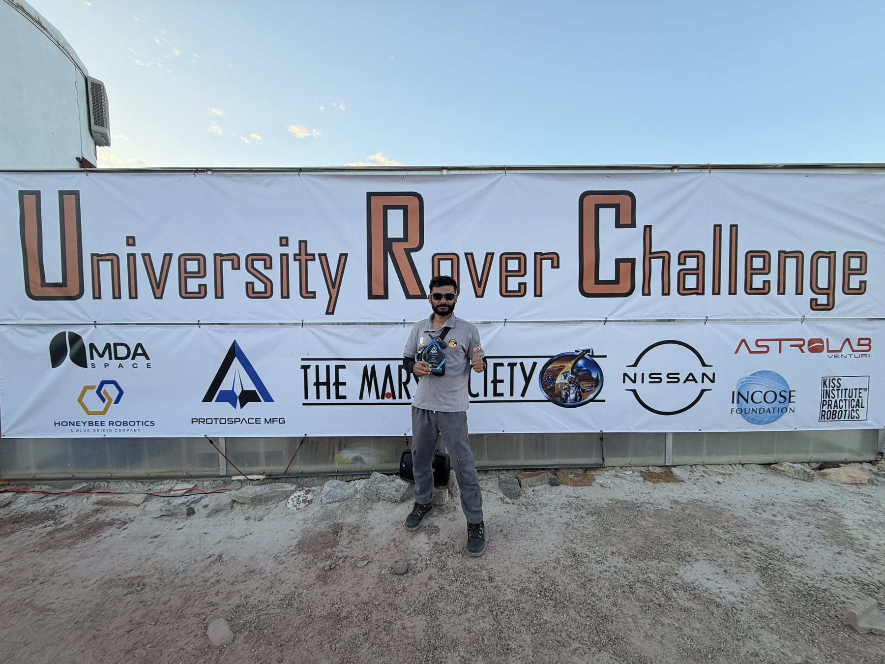
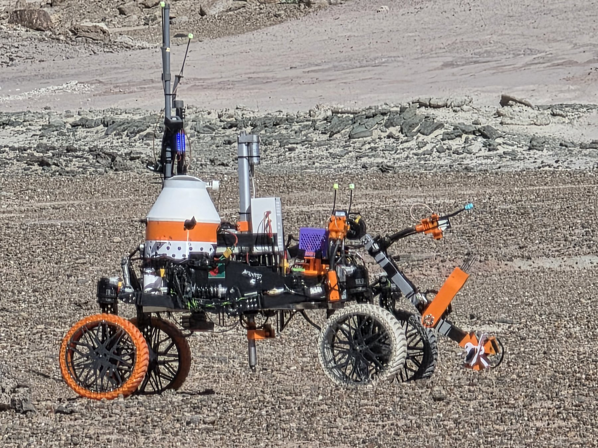
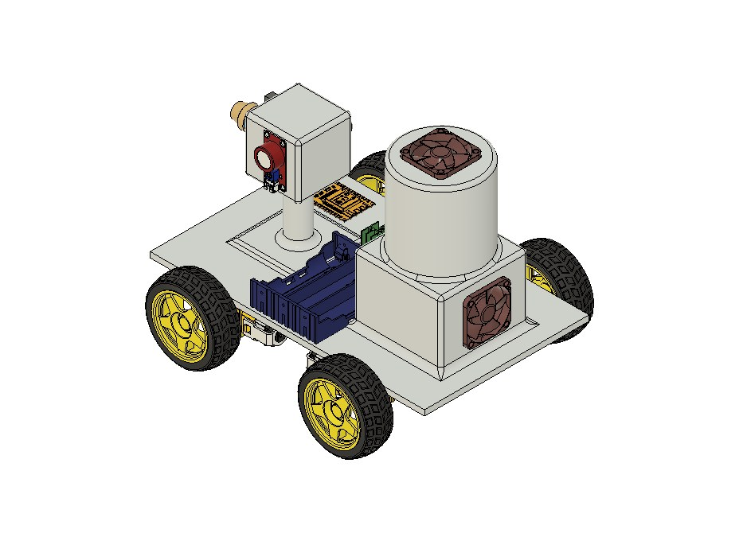
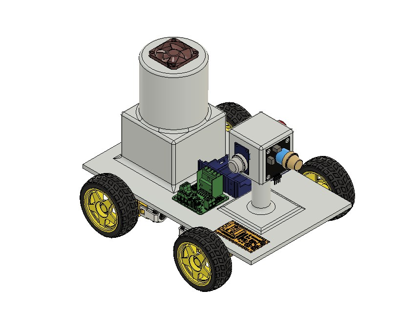

Component and assembly design
Mechanical Design · Robotics · Hardware Integration
I build physical systems that turn engineering ideas into working machines.
I’m Siam Ibne Sarwar (Sinan), a Computer Science and Engineering undergraduate with a strong interest in mechanical design, rover development, fabrication, prototyping and embedded hardware integration.
Current Role
Mechanical Team Lead
UIU Mars Rover Team

Mechanical integration and prototyping
3D printing and workshop work
Arduino, ESP boards and sensors
About Me
Computer science background, hands-on engineering focus.
I study Computer Science and Engineering at United International University. My strongest practical experience has grown through robotics and mechanical work, where design decisions have to survive fabrication, assembly and real field conditions.
I started in the UIU Mars Rover Team as a Mechanical Intern, progressed to Mechanical Member, and now serve as Mechanical Team Lead. I enjoy the complete engineering cycle — understanding a problem, designing a solution, building it, integrating it and learning from testing.

The Team
Engineering is a team effort.
Rover development brings mechanical, electrical, embedded and software work together. My role involves contributing to the mechanical system while coordinating with other rover sub-teams so that the final machine works as one integrated system.
Experience
Progression through hands-on rover development.
Oct 2025 — Present
Mechanical Team Lead
UIU Mars Rover Team
- Lead mechanical design and fabrication activities for rover development.
- Create mechanical components and assemblies using Fusion 360.
- Coordinate mechanical tasks with other rover sub-teams.
Mar 2025 — Oct 2025
Mechanical Member
UIU Mars Rover Team
- Contributed to mechanical design, prototyping, 3D printing and fabrication.
- Supported mechanical assembly and integration for rover systems.
Nov 2024 — Mar 2025
Mechanical Intern
UIU Mars Rover Team
- Assisted with rover prototyping, fabrication and mechanical assembly.
- Gained practical experience with Arduino, ESP boards and sensor integration.
Technical Focus
A multidisciplinary toolkit built around physical engineering.
Mechanical Design
Fusion 360, component design, assembly design and design-for-fabrication thinking.
Robotics & Rover Development
Mechanical integration, prototyping, field testing and multidisciplinary rover work.
Fabrication
3D printing, workshop fabrication, mechanical assembly and physical prototyping.
Embedded Hardware
Arduino, ESP boards, sensors and hardware integration for robotic systems.
Software & Technical Tools
Building software skills that complement engineering work.
Alongside my mechanical and hardware work, I continue developing software skills in Python, Git, GitHub, Docker and web technologies. These tools expand how I can approach automation, testing, data handling and system integration across multidisciplinary engineering projects.

Competitions & Achievements
Engineering under real competition pressure.
3rd Place
University Rover Challenge — 2026
6th Place
University Rover Challenge — 2025
3rd Place
Anatolian Rover Challenge — 2025
Rover in the Field
Design is only the beginning. The real test is operation.
Field testing brings together mechanical reliability, integration, terrain interaction and practical problem solving. It is where design assumptions meet the real environment.
Explore more engineering work →
Original Design & Physical Build
Sensor-Integrated RC Car Platform
I designed this RC car platform from scratch in Fusion 360 and carried the design into a physical build. The platform integrates a battery holder, motor driver, ESP board, air-sensing hardware, relay-controlled filtration components and supporting electronics within one mobile system.
The air sensor monitors air data. If an abnormal condition is detected, the system reports it to the dashboard/control system, where the controller can activate the filter through a relay module.
View the project →

Engineering Work & Projects